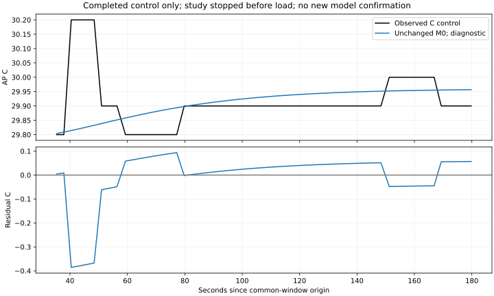

stopped_no_resume · C1개 적격 완료 / L35 준비 중 ADB 시각 조회2초timeout. 새 모형 적합·동결·확인0. 이 결과는 AP 모형 실패 판정이나 독립 정확도 PASS가 아닙니다.
| 항목 | 예정 상한 | 기록 |
|---|---|---|
| 세션 | 개발6＋확인6 | 시도2·완료1·준비중단1·미시도10 |
| 본 요청 / warmup | 192 / 96 | 시작기록0 / 반환16 |
| runtime / staging | 48 / 12·84파일 | 8 / 2·14파일 |
| APK push / 설치 / host pull | 0 / 0 / 2 | 0 / 0 / 1 |
| ADB / 누적작업시간 | 38,800 / 14,100초 | 963 / 375.400초 |
중단 세션의 온전한 progress73행 prefix만 회수했습니다. 앱 terminal이 없어 이후 미기록 본 호출을0으로 확정하지 않습니다(등록24요청 내 미확인 범위). 미시도10과 일부 회수는 별도로 표시합니다.
공통120초 관측132.482716J · 원래W식147.052011J · 차이+14.569295J. 전류raw=mA 조건부·절대 정확도 미인증입니다. AP 초기29.7°C는 원래 개발 시작 범위 밖입니다.
변경 없는M0는 부하 전AP＋실제 무부하 일정 조건부입니다. common35.344549–179.784549초/56표본: MAE0.067274°C·최대0.385750°C·최고 부호오차−0.243259°C. 고정 방향 창은 반올림 민감도에서 모두 미식별입니다. 새 후보/부하 반응/정책 우열로 확대하지 않습니다.

C앱cleanup정상. L35앱cleanup미확인·부분회수·원소유자host force-stop1회·마지막계획내ps 대상부재를 확인했습니다. 원래stack/receipt/checkpoint는 보존했습니다. timeout내부원인은미확정이며 이후 회수/종료 명령은 성공했습니다.
한 후보군의 개발6 적격 전제가 충족되지 않아 추정·확인에 진입하지 않았습니다. strict/default/experiment_ready=false는 유지됩니다. 종료된 계획을 재실행하거나 새 실측을 자동 추가하지 않습니다.
계약·재현 · 연구 계획과 최종 보고서 · 예정12세션 CSV · 명령용도/지연 · 검증·해시 · 제한 시뮬레이터